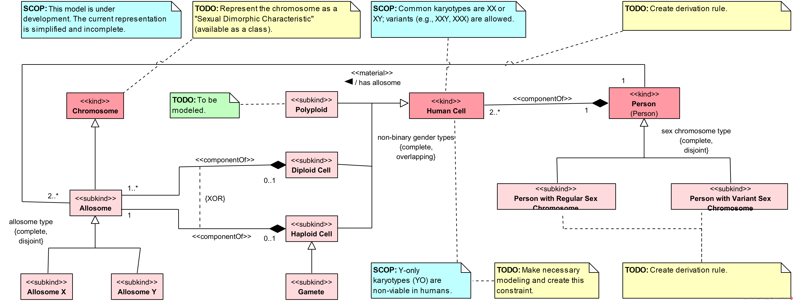
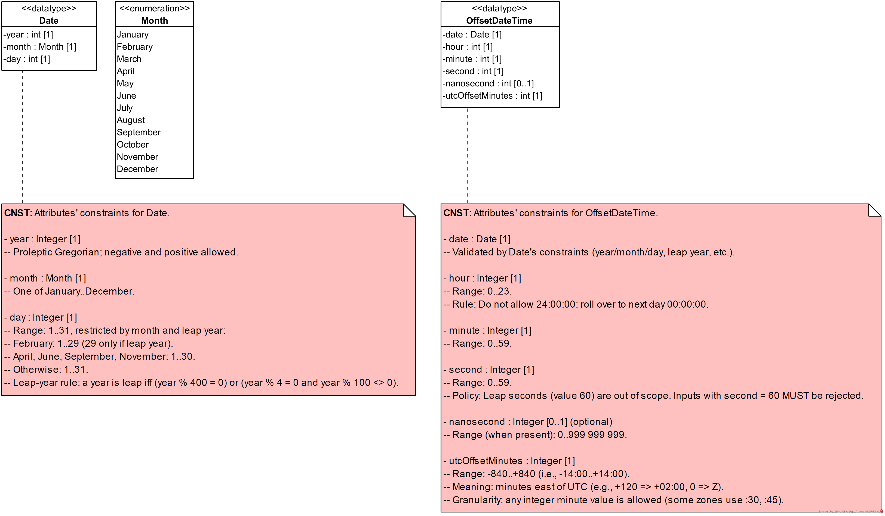

Health-RI Ontology
Version 2.0.0
Sex and Gender
This package describes the OntoUML conceptual model of Sex and Gender, detailing its structure, types, and relationships. The model follows the ontological notion of mode, representing properties that inhere in a Person. However, while these modes always depend on the bearer (they are properties of them), their determination can be either intrinsic depending only on the person's own features or extrinsic requiring assessment, assignment, or recognition by external agents.
This distinction is crucial to properly model the social, legal, and biological complexity of sex and gender in human contexts.
Person's Sex and Gender Basic Taxonomy

Person is classified into Woman, Man, and Non-binary Person as a complete set of person types. Each of these is further specified along two perspectives: sex-based person categories (Female-sex Person, Male-sex Person, Indeterminate-sex Person) and gender-based person categories (Female-gender Person, Male-gender Person, Non-binary-gender Person).
Overlap between sex-based and gender-based specializations is permitted, enabling a person to fall under a gender category independently of their sex classification while still relating both to the same person type. This keeps sex and gender conceptually distinct while providing a consistent alignment point for male, female, and non-binary person categories.
Person's Sex and Gender Full Taxonomy

Person is classified through multiple perspectives that cover sex at birth, phenotypic assessment, karyotypic characterization, and gender modality. Sex-at-birth-assigned Person is refined into Sex-at-birth Female-sex Person, Sex-at-birth Male-sex Person, and Sex-at-birth Indeterminate-sex Person and is aligned with phenotypic person categories, while karyotypic person categories distinguish regular and variant sex chromosome cases and refine them into regular and variant karyotypical male and female persons, including a karyotypical indeterminate person for variant cases.
Gender classification is represented through Female-gender Person, Male-gender Person, and Non-binary-gender Person and is refined by modality, including self-identified and externally attributed categories, administrative recognition, legal recognition, and legally unassigned gender. Cisgender Person and Transgender Person connect gender outcomes to sex-at-birth outcomes, and their self-identified and externally attributed refinements are grounded in self-awareness and external attribution, with masculine, feminine, and non-binary presentation categories adding focused refinements.
Sex and Gender Full Taxonomy

Organizes a taxonomy of Sex-Gender, Sex, and Gender categories used in the Sex and Gender scope. Provides a coherent naming structure across self-designated, externally-attributed, administrative, legal, and expression-based gender variants, alongside sex-related variants.
Sex-Gender is specialized into Male, Female, and Non-binary; Male is specialized into Male Sex and Male Gender, Female into Female Sex and Female Gender, and Non-binary into Indeterminate Sex and Non-binary Gender. Sex is specialized into Phenotypic Sex and Karyotypic Sex, and Phenotypic Sex is specialized into Sex at Birth. Gender is specialized into Self-designated Gender, Externally-attributed Gender, and Gender Expression; Self-designated Gender is specialized into Self-identified Gender and Gender Expression, and Self-identified Gender is specialized into Self-identified Male Gender, Self-identified Female Gender, and Self-identified Non-binary Gender. Externally-attributed Gender is specialized into Administrative Gender and into Externally-attributed Male Gender, Externally-attributed Female Gender, and Externally-attributed Non-binary Gender; Administrative Gender is specialized into Administrative Male Gender, Administrative Female Gender, and Administrative Non-binary Gender, and also into Legal Gender; Legal Gender is specialized into Legal Male Gender, Legal Female Gender, and Legal Non-binary Gender.
Sex and Gender Types

Sex-Gender provides a shared classification space for outcome categories that are used across sex-based and gender-based recording. This enables a single set of outcome identifiers to be referenced while still distinguishing whether the classification is being treated as sex-based or gender-based.
Sex-Gender Type provides a complete and disjoint partition of Sex-Gender into Sex and Gender. Sex-Gender Outcome provides a complete partition into Male, Female, and Non-binary Sex-Gender outcomes, with explicit overlap permitted among these outcomes. The type and outcome layers each classify one or more Sex-Gender instances, and each Sex-Gender instance is classified by one or more sex-gender types and one or more sex-gender outcomes.
Sex
The Sex package represents biological sex of persons along three axes: karyotypic sex, phenotypic sex, and sex at birth. It classifies persons by biological sex (male, female, indeterminate) using the overall set of sexual dimorphic characteristics (which may be operationalized in specific applications by counting and/or weighting traits) and distinguishes karyotypic male and female, including regular and variant sex-chromosome composition. Phenotypic sex is treated as an observable condition of a person that can be classified as male, female, or ambiguous with reference to visual sex characteristics. Sex at birth is addressed as a registration category that distinguishes persons with assigned or unassigned sex at birth and specifies the categories male, female, or indeterminate.
The package separates characterization, assessment, and registration. Phenotypic sex may be established by one or more assessments, which can involve clinical professionals, depending on context. Sex at birth is represented as an assignment recorded in a birth registration record (e.g., a birth notification) and may be governed by jurisdiction-specific administrative or legal rules. Karyotypic sex provides a chromosome-based characterization without prescribing decision rules. This structure keeps the dimensions of sex explicit, identifies the agents and artifacts involved in assessments and assignments, and supports consistent application of categories to persons.
Sex Definition

The diagram models Sex as a biological property that characterizes every Person. In this context, sex is represented as a mode, understood as an intrinsic property grounded in the person s biological makeup. The ontology acknowledges, however, that biological sex is not a single or unitary concept but rather an umbrella encompassing multiple dimensions, such as chromosomal, gonadal, hormonal, anatomical, and phenotypical aspects.
The model structures biological sex through three subkinds of persons: Male-sex Person, Female-sex Person, and Indeterminate-sex Person. These roles are distinguished based on the relative number of Sexual Dimorphic Characteristics exhibited by the individual. Such characteristics are further classified as Male-typical, Female-typical, or Indeterminate Dimorphic Characteristics, and together they form the basis for sex classification in the model.
This classification is simplified, focusing on the count of dimorphic traits without weighting them, while recognizing that in biological and clinical practice, some traits such as chromosomal constitution, gonadal tissue, or hormonal profiles may be considered diagnostically more significant than secondary sexual features. Supplementary notes in the model highlight this limitation and indicate that future refinements may include explicit modeling of chromosomes as sexual dimorphic characteristics.
By organizing sex in this way, the ontology establishes biological sex as a multifaceted construct while situating it within a coherent framework that connects intrinsic features of persons with representative biological dimensions, such as karyotypic, phenotypic, and assigned sex at birth.
Sex Overview

Sex is the general entry point for sex classification and is refined into Phenotypic Sex and Karyotypic Sex, with Sex at Birth positioned as a specialization of Phenotypic Sex to represent a recorded classification at birth.
The basic sex categories Male Sex, Female Sex, and Indeterminate Sex provide anchors that are further specialized into modality-specific counterparts, including phenotypic, karyotypic, and sex-at-birth variants, with Phenotypic Ambiguous Sex aligned with indeterminacy in the phenotypic modality.
Sex Taxonomy

Sex is organized as an umbrella category with distinct dimensions. Karyotypic Sex and Phenotypic Sex provide two major dimensions, and Sex at Birth is positioned as a refinement of phenotypic sex that captures formal assignment at birth.
Male Sex, Female Sex, and Indeterminate Sex act as core sex outcomes, while karyotypic, phenotypic, and sex-at-birth specializations align with them through multiple inheritance so that an outcome can be understood both as a general sex category and as a dimension-specific classification. The structure supports representing sex determinations without conflating chromosomal, phenotypic, and birth-record categories.
Sex Types

Sex is organized to distinguish the basis on which sex is described from the categorical value that is recorded. An axis layer provides alternative sex description bases, while an outcome layer provides the categorical sex outcomes used for recording and exchange.
Sex Axis provides a disjoint partition of Sex into Phenotypic Sex and Karyotypic Sex that is explicitly incomplete, allowing additional axis kinds beyond those enumerated. Sex at Birth specializes Phenotypic Sex to capture the birth-recorded case. Sex Outcome provides a complete and disjoint partition into Female Sex, Male Sex, and Indeterminate Sex. The axis and outcome layers each classify one or more Sex instances, and each Sex instance is classified by one or more axis types and one or more outcome types.
Sex Outcome
Sex is decomposed into male, female, and indeterminate outcome categories, establishing a basic biological sex classification that can be used as a shared reference for person categorization. Sex classification is applied to Person as the bearer of sex, enabling sex categories to ground person classifications at the level of individuals.
Specialized person categories correspond to each sex category, distinguishing male-sex persons, female-sex persons, and indeterminate-sex persons. This supports consistent use of sex categories both as types of sex and as person classifications derived from the sex attributed to an individual.
Sex Outcome

Sex is decomposed into male, female, and indeterminate categories, establishing a basic biological sex classification that can be used as a shared reference for person categorization. Person is included as the general bearer of sex, enabling sex classification to be applied at the level of individuals.
Specialized person categories correspond to each sex category, distinguishing male-sex persons, female-sex persons, and indeterminate-sex persons. This supports consistent use of sex categories both as types of sex and as person classifications derived from the sex attributed to an individual.
Male Sex

Male Sex is refined into distinct characterizations that capture the basis used for determining male sex. Karyotypic Male Sex, Phenotypic Male Sex, and Sex-at-birth Male Sex provide karyotypic, phenotypic, and birth-record perspectives while keeping Male Sex as the shared reference category.
Male-sex Person is specialized into corresponding person categories that track the same basis of determination. The links between each person category and its corresponding male sex category keep the classification basis explicit across karyotypic, phenotypic, and sex-at-birth perspectives.
Female Sex

Female Sex is refined into distinct characterizations that capture the basis used for determining female sex. Karyotypic Female Sex, Phenotypic Female Sex, and Sex-at-birth Female Sex provide karyotypic, phenotypic, and birth-record perspectives while keeping Female Sex as the shared reference category.
Female-sex Person is specialized into corresponding person categories that track the same basis of determination. The links between each person category and its corresponding female sex category keep the classification basis explicit across karyotypic, phenotypic, and sex-at-birth perspectives.
Indeterminate Sex

Indeterminate Sex captures cases that do not align with a determinate male or female classification. Phenotypic Ambiguous Sex refines this notion for phenotypic assessment, and Sex-at-birth Indeterminate Sex further refines it to the context of registration at birth.
Indeterminate-sex Person is specialized in parallel, with Phenotypic Ambiguous-sex Person and Sex-at-birth Indeterminate-sex Person preserving the same refinement pattern at the level of persons. The corresponding links keep person classification aligned with the indeterminate sex outcomes used as its basis.
Sex Axis
This package structures how biological sex is characterized along distinct bases of determination and how those characterizations become available for use. It distinguishes chromosome-based characterization, observation-based characterization grounded in visible anatomical features, and the formally recorded classification made at birth (where such registration exists). It supports representing determinate and indeterminate classifications, and it also supports representing cases in which no sex-at-birth classification is recorded (i.e., sex at birth is unassigned).
The package captures the assessment and assignment contexts that underpin non-intrinsic characterizations, including the participating professional roles, the person being assessed or assigned, and the records and rules (often jurisdiction-specific) that govern registration. It provides a focused vocabulary for visual sex characteristics and their typicality, enabling phenotypic characterization that can be tied to clinical or visual assessment while remaining separable from administrative recording at birth.
Sex at Birth

The diagram models Sex at Birth as an extrinsic mode that is determined through a process of formal assignment at the time of birth registration. While such assignments often rely on the newborn s phenotypical features, they are not merely descriptive but the outcome of a social and administrative act recorded in official documents.
The process is represented by the relator Sex at Birth Assignment, which mediates between the Sex at Birth Assigner (a role typically played by a healthcare professional) and the Sex-at-birth-assigned Person. This mediation links the professional responsible for the classification to the person whose sex is being recorded. Persons may therefore appear either as Sex-at-birth-assigned Persons or as Sex-at-birth-unassigned Persons if no assignment has yet taken place.
The assignment is also tied to a Birth Notification, which documents the registration act. A constraint clarifies that a person cannot register their own birth notification, ensuring that the assignment is always performed by another Sex at Birth Assigner. Furthermore, the model acknowledges the influence of Birth-related Legislation Rules, which establish the normative framework within which sex at birth assignments occur.
Karyotypic Sex

The diagram represents Karyotypic Sex as a mode that characterizes every Person according to their chromosomal configuration. This intrinsic determination is grounded in the composition of sex chromosomes and is present from birth, independently of later developmental or interpretive factors.
The model distinguishes between karyotypical male and karyotypical female persons, each further divided into Regular and Variant forms. Regular karyotypical males and females correspond to the common chromosomal patterns XY and XX, while variant karyotypes (e.g., XXY, X0, mosaic configurations) capture biological diversity beyond the typical patterns. Both male and female partitions are complete and disjoint, ensuring exhaustive and non-overlapping classification.
At the level of persons, the ontology separates Person with Regular Sex Chromosome from Person with Variant Sex Chromosome. Each of these types is further specified by the corresponding karyotypical category. Variant cases also include the possibility of a Karyotypical Indeterminate Person, acknowledging that some chromosomal configurations cannot be unambiguously aligned with either the male or female partition.
Phenotypic Sex

The diagram models Phenotypic Sex as a mode that characterizes a Person based on their observable anatomical and morphological traits. Unlike karyotypic sex, phenotypic sex is extrinsic, as it arises through assessment by others rather than being solely determined by genetic makeup. This assessment is represented through the relator Phenotypic Sex Assessment, which mediates the interaction between the Phenotypic-sex-assessed Person and the Phenotypic Sex Assessor, a role typically played by a healthcare professional.
Persons with assessed phenotypic sex are further specialized into the roles Phenotypic Male-sex Person, Phenotypic Female-sex Person, and Phenotypic Ambiguous-sex Person. These roles are complete and overlapping, reflecting the variability of observable traits and the fact that assessments may not always yield a binary outcome.
The ontology makes explicit use of Visual Sex Characteristic as the basis for assessment. These are categorized as Male-typical Visual Sex Characteristic, Female-typical Visual Sex Characteristic, or Indeterminate Visual Sex Characteristic, providing the cues through which assessments are made. This partition is complete and disjoint, ensuring that each characteristic is classified in exactly one category.
Sex Axis

Sex is treated as a biological classification grounded in distinct dimensions, including chromosomal constitution and observable anatomical features. Persons can be connected to sex classifications that are assessed or recorded, including a recorded classification at birth.
Sex is specialized into Karyotypic Sex and Phenotypic Sex as mutually exclusive alternatives in this model, while not asserting that these alternatives are exhaustive. Phenotypic Sex is further specialized by Sex at Birth, emphasizing a phenotypic classification that is recorded at the time of birth. Person is connected to Sex and also connected to Karyotypic Sex, supporting explicit representation of chromosomal and broader sex classifications for a given person. Phenotypic-sex-assessed Person refines Person for cases where a phenotypic classification has been assessed, and Sex-at-birth-assigned Person refines that assessed category for cases where a sex-at-birth classification is recorded; the link between Sex-at-birth-assigned Person and Sex at Birth is a specialization of the link between Phenotypic-sex-assessed Person and Phenotypic Sex.
Sex at Birth Taxonomy

Sex at birth assignment is treated as a classification outcome for a person, distinguishing cases with a recorded assignment from cases without a recorded assignment. Recorded assignments can be refined into determinate outcomes and indeterminate outcomes, and determinate outcomes are refined into male and female categories.
Person is partitioned into Sex-at-birth-assigned Person and Sex-at-birth-unassigned Person as mutually exclusive and collectively exhaustive alternatives, supporting explicit representation of the absence of a recorded sex-at-birth assignment. Sex-at-birth-assigned Person is further specialized by Sex-at-birth Determinate-sex Person, and also by Sex-at-birth Indeterminate-sex Person, capturing whether the recorded assignment resolves into a determinate category. Sex-at-birth Determinate-sex Person is partitioned into Sex-at-birth Male-sex Person and Sex-at-birth Female-sex Person as mutually exclusive and collectively exhaustive alternatives, representing the two determinate assignment outcomes.
Karyotypic Sex Specializations

Karyotypic Sex provides a chromosomal perspective on sex classification, distinguishing Karyotypic Male Sex and Karyotypic Female Sex as refinements of a common karyotypic basis.
Persons are classified in parallel through Karyotypic Male-sex Person and Karyotypic Female-sex Person, enabling explicit linkage between karyotype-based sex categories and the corresponding person categories for contexts where chromosomal information is relevant.
Phenotypic Sex Specializations

Phenotypic sex is decomposed into male, female, and ambiguous categories, supporting classification based on phenotypic assessment while retaining an explicit place for ambiguity. A person category is included to represent individuals for whom phenotypic sex has been assessed.
Specialized person categories correspond to phenotypic male sex, phenotypic female sex, and phenotypic ambiguous sex, aligning person classification with the phenotypic sex categories. This enables explicit distinction between the assessed sex category and the person categories that depend on that assessment.
Sex at Birth Specializations

Sex at birth is decomposed into male, female, and indeterminate categories, supporting representation of assigned sex at birth as a distinct classification. A person category is included to represent individuals with an assigned sex at birth.
Specialized person categories correspond to each sex-at-birth category, distinguishing male-at-birth-sex persons, female-at-birth-sex persons, and indeterminate-at-birth-sex persons. This supports consistent person classification derived from assigned sex at birth while keeping sex-at-birth categories distinct from other sex classifications.
Gender
Gender defines a person-related characteristic that can be established through distinct sources of identification and attribution. It distinguishes gender that is self-identified by the person from gender that is externally attributed to the person, and it supports external attribution that is recognized in administrative settings and, more specifically, in legal settings through governmental recognition. This separation enables representing gender characterizations that reflect different authorities and contexts of use without forcing a single privileged source.
Gender is organized around common gender outcomes and supports consistent alignment between those outcomes and context-specific gender types used in person characterizations. It also supports gender modality characterizations and explicit attribution by relating an attributing agent to the person to whom a gender is attributed, keeping the source of externally-attributed gender statements explicit.
Gender Overview

Gender is organized along two orthogonal partitions that are each complete and disjoint: gender contexts and gender outcomes. Gender contexts distinguish Self-identified Gender, Gender Expression, and Externally-attributed Gender, with Administrative Gender and Legal Gender refining Externally-attributed Gender, and the externally-attributed, administrative, and legal partitions allowing overlap. Gender outcomes distinguish Male Gender, Female Gender, and Non-binary Gender.
Each gender context is further specialized into outcome-specific types that align the context dimension with the outcome dimension, such as Self-identified Male Gender, Feminine Gender Expression, and Legal Non-binary Gender. Specialization relations are color-coded only to distinguish which generalization set they belong to, and the colors carry no semantic meaning.
Gender Taxonomy

Gender is organized as a taxonomy that distinguishes a general notion of gender from several attribution modalities that reflect how gender is expressed, identified, or recorded. The taxonomy separates personal identification from external attribution and from institutionally recorded forms, supporting explicit distinctions between self-identified, externally-attributed, administrative, and legal variants of gender.
Within each attribution modality, gender categories are specialized into male, female, and non-binary forms, enabling consistent classification across different sources of gender information. Gender expression is represented as a related branch with its own categories, allowing expression-oriented classification to be used alongside attribution-oriented classification while keeping these perspectives conceptually distinct.
Gender Types

Gender is organized to separate how gender information is established from the categorical result that is recorded. A context layer captures the basis for a gender characterization, while an outcome layer captures the resulting gender category, supporting consistent interpretation in interoperability settings.
Gender Context provides a complete and disjoint partition into Self-identified Gender, Gender Expression, and Externally-attributed Gender, with Externally-attributed Gender further specialized into Administrative Gender and Legal Gender. Gender Outcome provides a complete and disjoint partition into Female Gender, Male Gender, and Non-binary Gender. The context and outcome layers each classify one or more Gender instances, and each Gender instance is classified by one or more context types and one or more outcome types.
Gender Context
Gender Context defines the contexts in which gender is established for a person and the agents and social entities involved in that establishment. It distinguishes self-identified gender from externally-attributed gender, specializes externally-attributed gender into administrative gender as gender recognized by organizations, and further specializes administrative gender into legal gender as gender recognized through an authoritative institution (e.g., governmental authority), depending on jurisdiction. It also supports representing persons whose administrative or legal gender is recognized, as well as persons whose legal gender is unassigned.
Gender Context captures recognition as a mediated process that can involve recognizers, recognition acts, and recognition documents, allowing administrative and legal recognition to be represented with their associated participants and artifacts. It also includes an explicit gender attribution relation connecting a gender attributor to an externally gender-attributed person, preserving a clear separation between the attributing party and the person who is attributed.
Legal Gender

Legal Gender is established through Legal Gender Recognition, which is carried out by a Legal Gender Recognizer situated within a Government. This recognition is formalized in a Legal Gender Recognition Document, and both the recognition and its document are treated as specializations of their administrative recognition counterparts. This frames legal gender as a state-based form of gender recognition.
Legal Gender Recognition recognizes a Person, yielding the classification Legally Recognized Gender Person, and this person is associated with one or more Legal Gender instances. Persons are also classified under an "assigned legal gender" partition that distinguishes recognized legal gender from unassigned legal gender, supporting explicit representation of cases where no legal gender has been assigned.
Administrative Gender

Administrative Gender is assigned through an Administrative Gender Recognition, which specializes Gender Attribution. An Administrative Gender Recognizing Organization recognizes a Person through this recognition, supporting the classification Administratively Recognized Gender Person. The recognized person is associated with one or more Administrative Gender instances, capturing administrative gender outcomes as results of organizational recognition.
An Administrative Gender Recognition is created by an Administrative Gender Recognition Agent and generates an Administrative Gender Recognition Document, which is a Document. The generated document supports traceability of the recognition act. A relation "creates on behalf of" links the recognition agent and the recognizing organization, with a rule that derives this relation when an Administrative Gender Recognition mediates both parties; a scope note states that no additional formal relation between agent and organization is asserted.
Self-designated Gender

A Living Person may be in the Self-aware Person condition, which supports capturing self-designated information about gender. Each Self-aware Person is characterized by exactly one Self-identified Gender and exactly one Gender Expression. Both Self-identified Gender and Gender Expression are treated as kinds of Self-designated Gender, and they are mutually exclusive and collectively exhaustive with respect to Self-designated Gender.
Preferred pronouns are recorded for a Self-aware Person as optional, repeatable values. The pronoun content is represented as free text (string) to allow any pronoun specification without restricting the set of permitted values, supporting direct representation of an individual's stated pronouns.
Externally-attributed Gender

Externally-attributed Gender is grounded in Gender Attribution, which links a Gender Attributor to an Externally Gender-attributed Person via mediation relations. This supports an explicit attribution situation in which an individual agent attributes gender information to a person, and the attributed person is associated with one or more Externally-attributed Gender instances.
Each Gender Attribution has exactly one Gender Attributor and is attributed to exactly one Externally Gender-attributed Person, while allowing multiple attributions for the same attributor and for the same person. A stated constraint requires that, in each Gender Attribution, the Gender Attributor and the Externally Gender-attributed Person are not the same individual.
Person by Gender Context

Person is characterized by Gender through a set of gender contexts that are complete and disjoint. Self-aware Person is characterized by exactly one Self-identified Gender and exactly one Gender Expression, reflecting the distinction between a person's current self-identification and a person's outward expression.
Externally Gender-attributed Person is characterized by one or more Externally-attributed Gender outcomes, allowing multiple attributions to coexist. Administrative Gender and Legal Gender refine Externally-attributed Gender, and are used to characterize Administratively Recognized Gender Person and Legally Recognized Gender Person, respectively. Gender is treated as either a current self-identification that presupposes self-awareness, or an external attribution that may rely on prior self-identification or records, without assuming an inherent gender at birth.
Externally-attributed Gender Hierarchy

Gender Attribution defines how gender can be attributed to a person by an external agent through an explicit attribution relationship. It captures the roles of the gender attributor and the externally gender-attributed person, and it links the externally gender-attributed person to an externally-attributed gender characterization. Each attribution involves an attributing agent that is distinct from the person to whom gender is attributed, keeping the source of externally-attributed gender statements explicit.
Gender Attribution is specialized into Administrative Gender Recognition and Legal Gender Recognition, representing institutional attributions performed by an administrative gender recognizing organization and, more specifically, by a legal gender recognizer. These specializations relate the recognizing party to a recognition instance that connects a person with recognized gender to the corresponding recognized gender type, distinguishing administrative and legal recognition while preserving a shared attribution structure.
Gender Outcome
Gender Outcome defines person classifications according to gender outcomes, organizing persons as male-gender, female-gender, or non-binary-gender. It connects these person classifications to corresponding gender types through gender characterizations, ensuring that each person classification is grounded in an explicit gender characterization.
This package distinguishes person classifications by the source of the associated gender, separating self-identified from externally-attributed classifications and refining external attribution into administrative variants and, more specifically, legal variants. This supports describing a person by gender outcome while keeping the relevant source of recognition or attribution explicit (including organization- and jurisdiction-specific contexts).
Person by Gender Outcome

Person is classified into Male-gender Person, Female-gender Person, and Non-binary-gender Person, with the classification defined as complete and overlapping. Each Person is characterized by one or more Gender instances, and each such Gender instance characterizes exactly one Person.
Male-gender Person, Female-gender Person, and Non-binary-gender Person are each characterized by the corresponding gender outcome, namely Male Gender, Female Gender, and Non-binary Gender. The gender outcomes are defined as complete and disjoint, so each Gender instance falls under exactly one outcome, while a person may be associated with multiple outcomes by being characterized by multiple Gender instances.
Male Gender

Male-gender Person is characterized by one or more Male Gender outcomes. Male-gender persons are specialized as a complete and overlapping set of person types covering self-identification, presentation, and external attribution, and these specializations are aligned with corresponding male gender context types through characterization relations.
Male Gender is specialized into Self-identified Male Gender, Masculine Gender Expression, and Externally-attributed Male Gender as a complete and disjoint set, and Externally-attributed Male Gender is further specialized into Administrative Male Gender and Legal Male Gender. Self-identified Male-gender Person is characterized by exactly one Self-identified Male Gender, Masculine-presenting Person by exactly one Masculine Gender Expression, and externally-attributed, administrative, and legal male-gender persons by one or more corresponding externally-attributed, administrative, and legal male gender outcomes.
Female Gender

Female-gender Person is characterized by one or more Female Gender outcomes. Female-gender persons are specialized as a complete and overlapping set of person types covering self-identification, presentation, and external attribution, and these specializations are aligned with corresponding female gender context types through characterization relations.
Female Gender is specialized into Self-identified Female Gender, Feminine Gender Expression, and Externally-attributed Female Gender as a complete and disjoint set, and Externally-attributed Female Gender is further specialized into Administrative Female Gender and Legal Female Gender. Self-identified Female-gender Person is characterized by exactly one Self-identified Female Gender, Feminine-presenting person by exactly one Feminine Gender Expression, and externally-attributed, administrative, and legal female-gender persons by one or more corresponding externally-attributed, administrative, and legal female gender outcomes.
Non-binary Gender

Non-binary-gender Person is characterized by one or more Non-binary Gender outcomes. Non-binary-gender persons are specialized as a complete and overlapping set of person types covering self-identification, presentation, and external attribution, and these specializations are aligned with corresponding non-binary gender context types through characterization relations.
Non-binary Gender is specialized into Self-identified Non-binary Gender, Non-binary Gender Expression, and Externally-attributed Non-binary Gender as a complete and disjoint set, and Externally-attributed Non-binary Gender is further specialized into Administrative Non-binary Gender and Legal Non-binary Gender. Self-identified Non-binary-gender Person is characterized by exactly one Self-identified Non-binary Gender, Non-binary-presenting Person by exactly one Non-binary Gender Expression, and externally-attributed, administrative, and legal non-binary-gender persons by one or more corresponding externally-attributed, administrative, and legal non-binary gender outcomes.
Gender Modality
Gender Modality defines how a person can be characterized as cisgender or transgender and how such characterizations may arise from different sources. It supports modality assignments for persons and refines them into self-identified and externally-attributed modality types, allowing both perspectives to be represented when applicable.
Gender Modality also refines cisgender and transgender person types through their connections to sex at birth and to person classifications by gender type, supporting more specific modality assignments that are grounded in these linked characterizations. This supports consistent representation of modality statements while keeping the source of the modality explicit.
Gender Modality Overview

Person is classified by gender modality into Cisgender Person and Transgender Person, with the classification defined as complete and overlapping. Two context-specific person types support modality assignment: Self-aware Person supports self-identified modality types, and Externally Gender-attributed Person supports externally-attributed modality types.
Self-identified Cisgender Person and Self-identified Transgender Person specialize Self-aware Person as a complete and disjoint classification, while Externally-attributed Cisgender Person and Externally-attributed Transgender Person specialize Externally Gender-attributed Person as a complete and overlapping classification. Cisgender and transgender types are also refined by context, relating self-identified and externally-attributed variants to the broader cisgender and transgender person classifications.
Self-identified Cisgender Criteria

Defines self-identified cisgender classification by combining a self-identified gender-type classification with a sex-at-birth classification.
Self-identified cisgender persons are partitioned into female and male cases. Each case is defined by the conjunction of two conditions: the person is self-identified as female-gender or male-gender, and the person is also classified as Sex-at-birth Female-sex Person or Sex-at-birth Male-sex Person, respectively. This provides a clear criterion for self-identification-based cisgender classification that depends on both self-identification and a sex-at-birth type.
Externally-attributed Cisgender Criteria

Defines externally-attributed cisgender classification by combining an externally attributed gender-type classification with a sex-at-birth classification.
Externally-attributed cisgender persons are partitioned into female and male cases. Each case is defined by the conjunction of two conditions: the person is externally attributed as female-gender or male-gender, and the person is also classified as Sex-at-birth Female-sex Person or Sex-at-birth Male-sex Person, respectively. This provides a clear criterion for externally attributed cisgender classification that depends on both an externally attributed gender type and a sex-at-birth type.
Cisgender and Transgender

Gender modality is used to classify persons with an assigned sex at birth by the relationship between a gender classification and the sex-at-birth classification. Cisgender and transgender modalities are introduced and then specialized to capture male and female cisgender cases that combine gender characterization and sex-at-birth classification.
Sex-at-birth-assigned Person has specializations Cisgender Person, Transgender Person, and Sex-at-birth Indeterminate-sex Person; together these specializations are complete, while overlap between them is not excluded. Cisgender Person is specialized into Male Cisgender Person and Female Cisgender Person as mutually exclusive and collectively exhaustive alternatives. Male Cisgender Person is specialized under Cisgender Person, Male-gender Person, and Sex-at-birth Male-sex Person, and Female Cisgender Person is specialized under Cisgender Person, Female-gender Person, and Sex-at-birth Female-sex Person, capturing cases where a male or female gender characterization aligns with the corresponding sex-at-birth classification. Transgender Person is also specialized under Sex-at-birth Determinate-sex Person, focusing this modality on cases where the sex-at-birth classification is determinate.
Person by Gender Modality

Gender Modality links Person-level sex and gender characterizations by representing pairings between a Sex-at-birth-related sex classification and a gender classification. A Person may be classified as Cisgender Person and or Transgender Person, reflecting an explicitly incomplete and overlapping partition of Person by modality-based characterization.
Each Gender Modality instance is linked by has cause relations to exactly one Sex and exactly one Gender, establishing the specific sex-gender pairing it represents. Modality instances are determined for eligible pairings between the Sex-at-birth and Gender characterizations of a person, excluding Indeterminate Sex at birth from pairing. A modality instance is classified as Cisgender when its Sex-at-birth and Gender causes match (Male with Male, or Female with Female), and as Transgender when they do not match, including pairings involving Non-binary Gender. A Person belongs to Cisgender Person or Transgender Person when characterized by the corresponding Cisgender or Transgender modality instance.
Gender Modality Types

Gender Modality supports a controlled representation of how sex and gender relate for a person by organizing modality as a distinct classification focus. A dedicated type layer provides stable modality type identifiers that can be used to classify modality instances consistently across data capture and exchange.
Cisgender and Transgender form a complete and disjoint partition of Gender Modality, ensuring that each modality instance falls under exactly one of these modality kinds. The type layer classifies one or more Gender Modality instances, and each Gender Modality instance is classified by one or more modality types, supporting reuse of modality type designations where modality needs to be referenced as a type-level label.
Sex-Gender Outcome
This package defines a shared set of sex-gender outcomes that align sex-based and gender-based classifications under common terms. In this model, Sex-Gender generalizes the outcomes Male, Female, and Non-binary. Male generalizes Male Sex and Male Gender, Female generalizes Female Sex and Female Gender, and Non-binary generalizes Indeterminate Sex and Non-binary Gender.
The package also provides corresponding person classifications that unify sex-based and gender-based person types. Man generalizes Male-sex Person and Male-gender Person, Woman generalizes Female-sex Person and Female-gender Person, and Non-binary Person generalizes Indeterminate-sex Person and Non-binary-gender Person. Associations link persons to Sex-Gender and link each of Man, Woman, and Non-binary Person to the corresponding outcome category, supporting consistent use of shared outcomes while retaining explicit ties to the underlying sex and gender variants.
Sex-Gender Outcome

Defines the Sex-Gender outcome space used to qualify a general person class and the three high-level outcome categories. Clarifies how the outcome categories relate to the corresponding person categories.
A general class (unlabeled) is characterized by Sex-Gender, and Sex-Gender is specialized into Male, Female, and Non-binary as a complete refinement that permits overlap. Man is characterized by Male, Woman by Female, and Non-binary Person by Non-binary, establishing outcome-based person categories alongside the general Sex-Gender qualification.
Male

Distinguishes sex-based and gender-based forms of Male and aligns these with corresponding types of Man. Captures separate qualification patterns for the sex-based and gender-based cases.
Man is characterized by Male. Male is specialized into Male Sex and Male Gender as disjoint and complete alternatives, while Man is specialized into Male-sex Person and Male-gender Person as a complete refinement that permits overlap. Male Sex is associated to Male-sex Person with cardinality 1..3, and Male Gender is associated to Male-gender Person with cardinality 1..*; these two associations correspond to the sex-based and gender-based specializations of Male.
Female

Distinguishes sex-based and gender-based forms of Female and aligns these with corresponding types of Woman. Captures separate qualification patterns for the sex-based and gender-based cases.
Woman is characterized by Female. Female is specialized into Female Sex and Female Gender as disjoint and complete alternatives, while Woman is specialized into Female-sex Person and Female-gender Person as a complete refinement that permits overlap. Female Sex is associated to Female-sex Person with cardinality 1..3, and Female Gender is associated to Female-gender Person with cardinality 1..*; these two associations correspond to the sex-based and gender-based specializations of Female.
Non-binary

Distinguishes gender-based and indeterminate-sex forms of Non-binary and aligns these with corresponding types of Non-binary Person. Captures separate qualification patterns for the gender-based and indeterminate-sex cases.
Non-binary Person is characterized by Non-binary. Non-binary is specialized into Non-binary Gender and Indeterminate Sex as disjoint and complete alternatives, while Non-binary Person is specialized into Non-binary-gender Person and Indeterminate-sex Person as a complete refinement that permits overlap. Non-binary Gender is associated to Non-binary-gender Person with cardinality 1.., and Indeterminate Sex is associated to Indeterminate-sex Person with cardinality 1..; these two associations correspond to the gender-based and indeterminate-sex specializations of Non-binary.
Biology
Chromosomes

The diagram models chromosomes and their role in human cells and persons. At its core, Chromosome is specialized into the subkind Allosome, which is further partitioned into Allosome X and Allosome Y. A note clarifies that an allosome set can never consist of only Y, preventing biologically inconsistent representations. The model enforces that allosome type is complete and disjoint.
Human cells are classified according to their number of chromosomes as either Diploid Cell or Haploid Cell, in a complete and disjoint partition. Diploid cells incorporate one or more allosomes, whereas haploid cells (including Gametes) contain only one set of chromosomes. The relations use {xor} constraints to ensure mutual exclusivity in chromosome composition. This distinction provides explicit support for modeling gametes as haploid carriers of genetic material.
On the organismal level, Person is represented as composed of two or more human cells, with specialization according to sex chromosome type. The diagram distinguishes between Person with Regular Sex Chromosome (diploid XX or XY) and Person with Variant Sex Chromosome, allowing the ontology to accommodate individuals with chromosomal variations.
Cellular Entities

The diagram represents the high-level modeling of cellular entities and their relation to broader biological categories. At the core is the category Cellular Entity, which generalizes living beings composed of cells, including both individual organisms and more specific cellular components. This category is specialized according to the complete and disjoint states Living Cellular Entity and Dead Cellular Entity, capturing the essential life-state distinction relevant to medical and biological contexts.
The diagram makes explicit that cellular entities encompass not only whole organisms but also entities such as fetuses, embryos, and isolated cells. This ensures coverage of cases important for biomedical data integration where early developmental stages and cellular-level entities must be consistently represented.
From a taxonomic perspective, Cellular Entity subsumes Animal, which is further divided into the disjoint categories Person and Non-Human Animal. This partition provides a clear distinction between human and non-human subjects in biomedical datasets while preserving their common grounding as cellular entities.
Health Condition
Health Condition Overview

The diagram Health Condition Overview provides a high-level structure for representing health conditions and their main distinctions. It introduces Health Condition as a specialization of Condition, associated with Animal entities, and instantiated through Health Condition Types. This establishes the general framework in which health conditions are characterized and classified within the ontology.
The diagram differentiates health conditions along two principal axes. The first axis concerns pathological status, dividing conditions into pathological and non-pathological types. Pathological Health Condition is further connected to categories such as Disease and Non-traumatic Health Condition, clarifying its scope within the ontology. The second axis addresses the nature of health conditions, separating risk-based conditions from established ones. Risk-based conditions represent probabilities or predispositions, while established conditions represent actual states, ensuring that both preventive and diagnostic perspectives are accounted for.
Together, these partitions provide a coherent schema for distinguishing between current disorders, risks of future conditions, and the pathological status of health states.
Established Health Condition Types

The diagram Established Health Condition Types organizes the classification of health conditions based on structural, functional, psychological, and etiological aspects. It provides a structured view of how different categories of conditions are related, ensuring that all relevant perspectives on health conditions are consistently represented. The model distinguishes between structural and non-structural conditions, including functional and psychological conditions, and connects them to broader classifications of established health conditions. It also incorporates etiological distinctions, such as idiopathic and known-origin conditions, with the latter further divided into congenital and acquired types.
The diagram additionally addresses dependence types, separating inherent conditions from externally-caused ones. Externally-caused conditions are modeled alongside injuries and exposure-based conditions, reflecting the impact of external influences on health states. Injuries are further divided into traumatic and non-traumatic categories, capturing the role of trauma in their occurrence. This structure ensures that conditions are classified according to both their internal characteristics and their external determinants.
Overall, the diagram provides a comprehensive schema for differentiating established health conditions, using complete and disjoint partitions where appropriate and allowing overlaps where necessary.
General
Agents

The diagram organizes the ontology of Agents, rooted in the UFO-based category Agent. Agents are understood as entities capable of acting or exercising agency in a system. The diagram distinguishes between collective and individual forms of agency.
Organization is modeled as a kind of agent that represents collective structures, while Individual Agent is a separate category, further divided into disjoint and complete types. These include Artificial Agent, covering computational or technological systems with agency-like behavior, and Animal, representing biological entities capable of action. Within the biological domain, Person is modeled as a kind of animal, thereby situating human agents within the broader taxonomy of living individual agents.
The diagram specifies that types of agents as a whole are incomplete and disjoint, clarifying that while the current taxonomy covers key distinctions, the classification is not exhaustive. By contrast, types of individual agents are modeled as complete and disjoint, ensuring that every individual agent must be classified as either artificial or animal, with no overlap.
Datatypes

A coherent set of datatypes for calendar and civil time. It includes an enumeration Month with twelve named values, a Date datatype that combines year, month, and day in the proleptic Gregorian calendar, and an OffsetDateTime that reuses Date and adds hour, minute, second, optional nanosecond, and a UTC offset in whole minutes. The separation between Date and OffsetDateTime supports reuse of calendar dates where no time-of-day or offset is needed and enables precise timestamping where an explicit offset is required.
Documents

The diagram introduces the general category Document, encompassing entities that serve as carriers of information. This category is specialized into two complete and disjoint subcategories: Physical Document and Digital Document.
Physical Document represents tangible information carriers such as paper records, printed reports, or handwritten notes. Digital Document covers information encoded in electronic formats, including files, databases, and digitally stored reports. The complete and disjoint constraint ensures that every document must be classified as either physical or digital, with no overlap between the two.
This distinction supports consistent representation of information artifacts across heterogeneous healthcare and research contexts, enabling explicit modeling of whether information exists in material form or as a digital object.
Addressable Place

Address characterizes Addressable Place via is address of . Multiplicity 1..* on both ends supports multiple addresses per place and (when needed) reuse of the same address across multiple addressable places.
Diagnosis
Diagnostic Assessments

The diagram represents the structure and results of diagnostic processes. At the top, a Diagnostic Relation connects diagnosing agents and diagnosed entities. Once a diagnostic process has been completed, this relation becomes a Concluded Diagnostic Relation, which manifests in one or more Diagnostic Assessments. These assessments classify the determination of diagnostic results into complete and disjoint categories.
A Diagnostic Assessment may be Conclusive or Inconclusive. Inconclusive assessments represent cases where the diagnostic process fails to establish a definitive result. Conclusive assessments are subdivided into Negative Diagnosis Assessment and Positive Diagnosis Assessment, each yielding a specific outcome. Negative assessments yield a No-Diagnosis Outcome, while positive assessments yield a Diagnosis. Both outcomes are treated as subkinds of Diagnostic Assessment Outcome, which serves as the general mode representing the result of a diagnostic process.
The model also includes a connection from Diagnostic Assessment Outcome to the general category Belief, clarifying that diagnostic outcomes are modeled as entities that may ground or manifest beliefs within clinical or biomedical contexts.
Diagnostic Relations

The diagram presents the structural components and mediations that constitute a Diagnostic Relation. This relator connects a Diagnosing Agent and a Diagnosed Entity, ensuring that diagnostic activities are explicitly grounded in the participation of both an agent and a target entity.
A diagnostic process may begin with a Diagnosis Suspicion, modeled as a mode and characterized as a specific kind of Belief. Suspicion is always linked to at least one diagnosing agent, capturing the cognitive or inferential basis that motivates the establishment of a diagnostic relation.
Diagnostic relations also involve Diagnostic Methods, which are characterized modes instantiated by a Diagnostic Method Type. This distinction ensures that diagnostic practices are not only recorded at the instance level but also categorized by methodological type, providing traceability of procedures.
On the side of the diagnosed entity, the diagram shows that each diagnosed entity, modeled as a substantial, can be characterized by one or more Conditions. These conditions, in turn, may be further qualified by Condition Indicators, which capture observable or inferable elements such as symptoms, signs, risk factors, or contextual historical data. A note clarifies that condition indicators can be decomposed into subjective, objective, and contextual categories, offering finer-grained representation of diagnostic evidence.
Diagnosing Agents

The diagram specifies the agents responsible for performing diagnostic activities and issuing diagnostic outcomes. At its root, the general category Agent is specialized through the role mixin Diagnosing Agent, representing any entity capable of carrying out a diagnostic process. This general type is further specialized into two disjoint roles: Diagnosing Artificial Agent and Diagnosing Person.
Artificial agents include automated systems, algorithms, or devices classified under the broader category Artificial Agent, highlighting the relevance of computational and technological systems in diagnostic contexts. Diagnosing persons, grounded in the kind Person, are subdivided according to professional status. The roles Layperson Diagnosing Agent and Professional Diagnosing Agent are modeled as complete and overlapping, allowing for flexible representation of cases where diagnostic activities may be carried out by professionals (e.g., clinicians) or non-professionals (e.g., self-diagnosis).
In addition, diagnosing agents are linked to the role mixin Diagnostic Outcome Issuer, ensuring that diagnostic activities are tied to the issuance of outcomes. A characterization relation specifies that each Diagnostic Assessment Outcome is issued by at least one diagnostic outcome issuer, anchoring diagnostic outcomes to the agents responsible for their production.
Diagnosis Types

The diagram structures the taxonomy of Diagnosis, identifying different types according to their object, focus, source, and use. A general subkind Diagnosis is specialized into Cellular Entity Diagnosis and Healthcare Diagnosis, ensuring coverage of both cellular-level and broader healthcare-oriented diagnostic contexts.
Cellular Entity Diagnosis is partitioned into the disjoint types Antemortem Diagnosis and Postmortem Diagnosis, distinguishing whether the diagnostic assessment occurs before or after death. Healthcare Diagnosis is further refined through three complementary classification axes. By focus, diagnoses are divided into Human Healthcare Diagnosis and Veterinary Diagnosis. By source, they are classified into disjoint subtypes such as Clinical Diagnosis, Epidemiological Diagnosis, Laboratory Diagnosis, Administrative Coding Diagnosis, and Radiological Diagnosis. By use, diagnoses are modeled as roles that may overlap: Care-oriented Diagnosis, Surveillance Diagnosis, and Research Diagnosis.
The model also incorporates the distinction between Self-diagnosis and External Diagnosis. A note clarifies that self-diagnosis applies exclusively when a single individual simultaneously plays both diagnosing agent and diagnosed entity roles. Another annotation highlights that diagnosis types are defined by the method from which they originate, such that diagnoses derived from laboratory methods are classified as laboratory diagnoses.
Diagnosed Entities

The diagram defines the abstract notion of a Diagnosed Entity, capturing the range of entities that may be the subject of a diagnostic process. This is partitioned into four disjoint and complete types, ensuring that all diagnosed entities fall into one of these categories.
The specialization includes Diagnosed Cellular Entity, which is explicitly linked to the broader biological category of Cellular Entity. This supports the modeling of diagnostic contexts where individual cells, such as tumor cells or infected cells, are the diagnostic target. Diagnosed Biological Part covers organs, tissues, or other anatomical structures subject to diagnosis, while Diagnosed Specimen represents biological samples collected for diagnostic analysis. Finally, Diagnosed Group accounts for diagnoses applied at the collective level, such as patient cohorts or study populations.
UFO
Endurant

The diagram presents the high-level taxonomy of Endurants as conceptualized in UFO. At the top, Particular is introduced as a general mixin that subsumes all individual entities. From this root, the category Endurant captures entities that persist through time while possibly undergoing changes in their properties.
Substantial is modeled as a specialization of endurants, representing entities that have identity and exist independently. The category is further partitioned into two complete and disjoint subtypes: Object and Agent. Objects denote substantial entities that are not capable of agency, while Agents represent substantials that can act or exercise agency. This division provides the ontological basis for distinguishing between passive and active entities in the domain.
Person
Person's Living Status

The diagram models the temporal and biological aspects of a person s existence, capturing both life stages and living status. At its center is the kind Person, which includes an attribute date of birth that records the individual's birth date. A constraint ensures consistency by requiring that the date of birth matches the date portion of the end attribute of the associated Person s Birth event.
The diagram distinguishes between two mutually exclusive living states, represented as phases: Living Person and Dead Person. This partition is complete and disjoint, ensuring that every person is classified in one and only one of these states at a time. A living person may transition across the life stages Child, Adolescent, and Adult, also modeled as complete and disjoint phases. Additional constraints clarify that no person can become an adolescent without first being a child, and no person can become an adult without first being an adolescent.
The Person's Birth event creates the role Offspring, mediated by the Parent-Child Relation. A birth event includes start and end timestamps, the latter aligning with the person's registered date of birth. Conversely, the Person's Death event terminates the individual's life status and is associated with at least one Person's Death Cause. This mode is instantiated by a Person's Death Cause Type, ensuring that every recorded death is explained by an identified cause type.
By connecting life stages, birth and death events, and cause of death, the diagram provides a coherent framework for modeling the lifecycle of a person within biomedical and demographic contexts.
Person Birth
This package provides the concepts needed to represent a person's birth as an event that can be linked to a place and categorized by multiplicity. It connects a Person to a Birth event that happened in a Birth Place, where Birth Place is treated as a specialization of Addressable Place. Birth is partitioned into Single Birth and Multiple Birth, and Single Birth is further partitioned into Singleton Birth and Multiple Birth Component, supporting explicit representation of multiple-birth components without mixing categories. Scope is limited to persons after birth and treats prenatal stages as out of scope.
The package also supports birth provenance at an abstract level through Birth Biological Provenance, which links the person to their Genetic Mother, Genetic Father, and a Gestational Carrier, while leaving detailed conception-to-birth processes outside scope. It assumes nuclear-DNA parentage with one oocyte provider and one sperm provider, and treats additional genetic contributors as out of scope. A constraint prohibits a person from being their own Genetic Mother, Genetic Father, or Gestational Carrier. Derived person attributes are specified from the recorded birth event: birth date-time from Birth.end preserving date, time, and UTC offset, birth date and birth year from Birth.start, and current age as full years computed by comparing the birth date to the current calendar date of use.
Birth Participants and Place

Birth is linked to the persons that originate from it and to the gestational carrier associated with it. Each Person is linked to exactly one Birth, while a Birth may be linked to one or more persons, supporting cases where a single birth is associated with multiple persons. Each Birth is linked to exactly one Gestational Carrier, and each Gestational Carrier may be linked to one or more births across time.
Birth is linked to exactly one Birth Place, and a Birth Place may be linked to one or more births. Birth Place specializes Addressable Place, enabling birth locations to be treated as addressable places. Person is intended to denote an individual after birth; prenatal stages are outside scope here.
Birth Attribute Derivation

Person includes birth-derived attributes computed from the Single Birth that creates the Person. Temporal values use the date component of Single Birth.start and the full timestamp of Single Birth.end as recorded.
Current age is derived as full years by comparing Single Birth.start.date to today s calendar date (subtracting one year if the birthday has not occurred yet this year). Birth year is Single Birth.start.date.year; birth date is the date part of Single Birth.start (ignoring time and UTC offset); and birth date-time is taken from Single Birth.end preserving date, clock time, and UTC offset (treat nanosecond as 0 if missing). Place-of-birth attributes (birth place address/country/city-or-location) are derived from the Birth Place used in the Single Birth and the Address applicable at the time of the Birth.
Birth Provenance

This diagram models biological birth provenance for a Person via a Birth Biological Provenance relator. Each Person is linked to exactly one provenance, which links the Person to exactly one Genetic Mother, one Genetic Father, and one Gestational Carrier; each contributor may participate in one or more provenances over time. Genetic Mother and Genetic Father are also connected directly to Person via the named material relations is genetic mother of and is genetic father of .
Scope is restricted to nuclear-DNA parentage with exactly one oocyte provider and one sperm provider per person (excluding additional contributors such as mitochondrial donation). Genetic Mother and Gestational Carrier specialize Karyotypic Female-sex Person; Genetic Father specializes Karyotypic Male-sex Person. A Person cannot be their own genetic mother, genetic father, or gestational carrier; prenatal stages are out of scope.
Birth Types

Birth is specialized into Single Birth and Multiple Birth, distinguishing births by whether they correspond to one person or to a grouped multiple birth. Single Birth is specialized into Singleton Birth and Multiple Birth Component, supporting a representation where each component birth in a multiple birth is itself treated as a single birth instance. Multiple Birth is linked to Multiple Birth Components in a whole-part relation where each Multiple Birth is linked to two or more components and each component is linked to exactly one Multiple Birth.
The Person to Birth link is specialized for Single Birth, using an offspring relation between Person and Single Birth with multiplicity 1 at both ends. Birth position for Multiple Birth Component is derived by ranking the components of the same Multiple Birth by start time (earliest to latest), using end time only to break ties when start times match; the rank is the birth position. Multiple Birth start matches the earliest component start, and Multiple Birth end matches the latest component end.